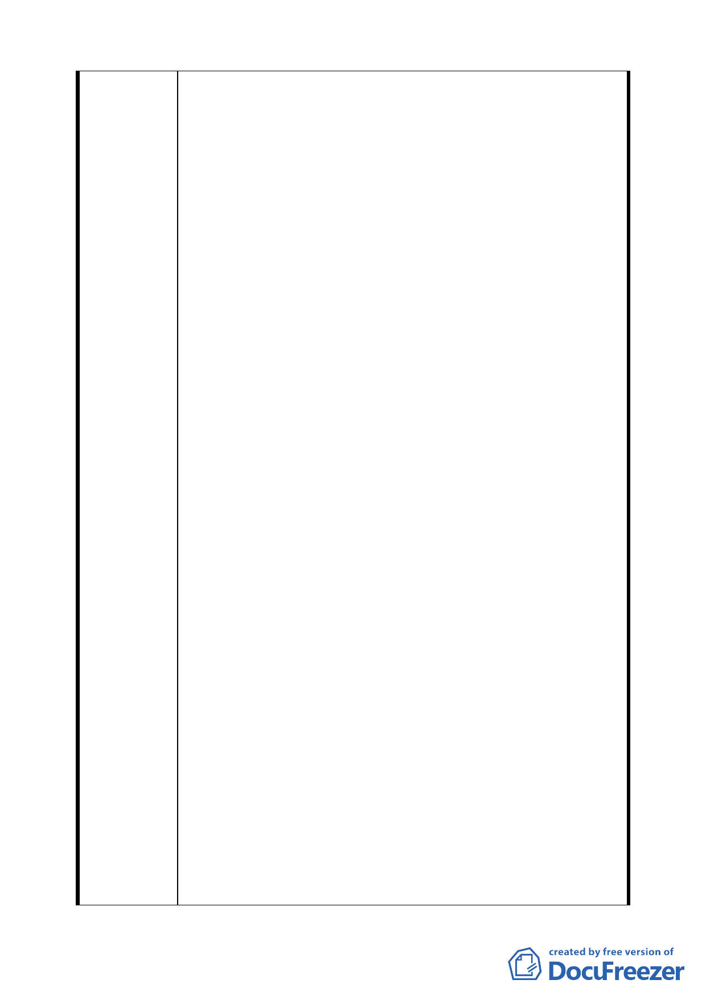

章一般設計通則第一節第三條之一迴車道設置標準第
（一）款規定，迴車道可採用圓形，按圓形迴車道之設
計圖直徑十二公尺即符合規定。查三五七巷道底圓形迴
車道原先即按直徑十二公尺設置，惟巷道變更中心樁
後，目前之迴轉道直徑約為十公尺，再現況情形下，多
年來使用並無不便，並無修正變更直徑為十五公尺之必
要。況且，法令既然規定圓形迴車道直徑十二公尺即可，
顯然不影響交通安全問題。按建築技術規則既係內政部
所頒訂，針對圓弧型迴車道直徑標準訂為十二公尺，顯
然已考量消防之因素，在迴車道淨空之情形下，十二公
尺應符合消防車之迴轉。查台北市政府消防局之意見認
為「三五七巷道內因路寬狹窄且路邊停車，消防車無法
進入測試，依迴車道現有寬度研判，消防車不易通行。」
惟此項見解，異議人難以認同，查三五七巷計劃道路都
市計劃為六公尺，倘都市計劃迴車道直徑減為十二公
尺，按迴車道設置標準應符合交通安全之需求。否則，
倘在巷道之迴車道有停車之情形下，不按道路淨空之標
準計算，縱然將迴車道直徑擴增至十五公尺或更寬，亦
難符交通安全之要求。蓋都市計劃與現況使用情形，二
者係不同之概念，就立法觀點言，建築技術規則既定訂
圓形迴車道標準直徑為十二公尺，當表示按其標準，道
路在淨空之狀況下即足敷交通安全及消防之需求，否
則，為何不要求將直徑標準訂為十公尺或十五公尺？衡
情，將迴車道直徑加大為十五公尺，就道路之使用現況
觀點言，除增加車輛之停用，恐更使迴車道不便外，實
難以理解在道路淨空之原則下，按設置標準圓形迴車道
直徑十二公尺，依都市計劃竟會發生有不服迴車道需求
之理？然而內政部所訂設置標準又何以未將法規定為直
徑十五公尺？何況，三五七巷道長度僅約八十公尺左
右，兩邊住戶不多，屬低密度之住宅區，並非高樓大下
之住宅，中小型消防車可進入計畫道路六米巷道，且迴
車亦無問題而言。從而台北市政府六十六年公告之細部
計劃雖歷經二次檢討仍然維持原計畫不變，殊令人費
解？所謂為交通安全原則不宜變更，亦與上述內政部頒
訂之建築技術規則不符，顯然係 貴府主管機關書面作
業推託之辭，實難令人信服。
三、畸零地應非問題：按台北市政府都市發展局曾召集相關
部門開會研討，認為本案十五米直徑迴車道南側基地，
經建管處查明業已於八十八年核發建照，如減縮為十二
第 四二 頁，共 49 頁